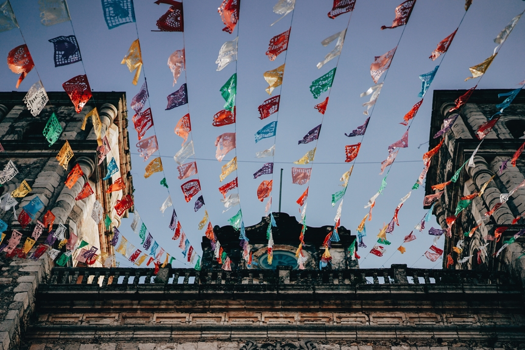
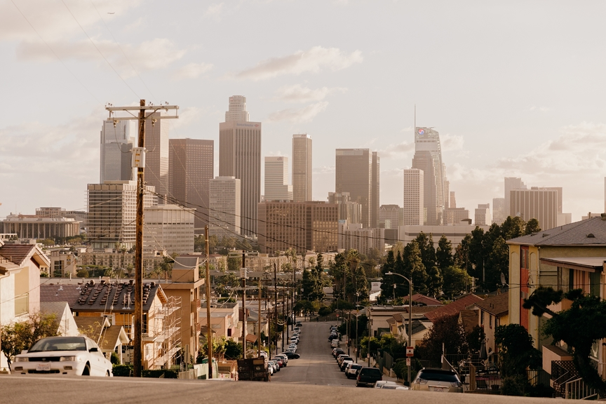
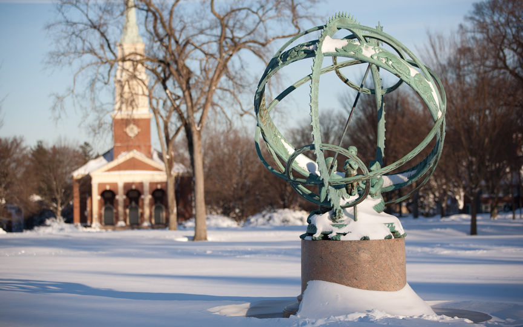

-

Jalisco, Mexico
I am a first generation Chicana. My family is originally from Jalisco, Mexico. My parents left Mexico in their early twenties and relocated to California.
-

Los Angeles, CA
With the exception of my infant years, I spent my childhood in Boyle Heights. After college, I returned there and worked in surrounding cities, like Long Beach and El Segundo.
-

Andover, MA
I attended and graduated from Phillips Academy, a boarding school in Andover, MA. It was the first time I had lived on my own, and the first time I got to see what life was like in communities different from my own. Photo provided by Phillips Academy Andover
-
San Francisco, CA
After high school, I attended USF for my undergrad education. I graduated with a BS in Business Administration and a minor in legal studies. My very first apartment EVER was in the Richmond District near Golden Gate park.
-
Settle, WA
In 2018, during my Saturn return, I decided to leave my life in LA and move to Seattle to attend Ada Developers Academy, a software development program for women and gender diverse people.